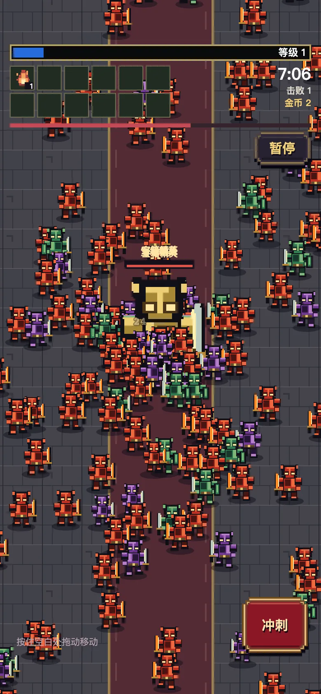
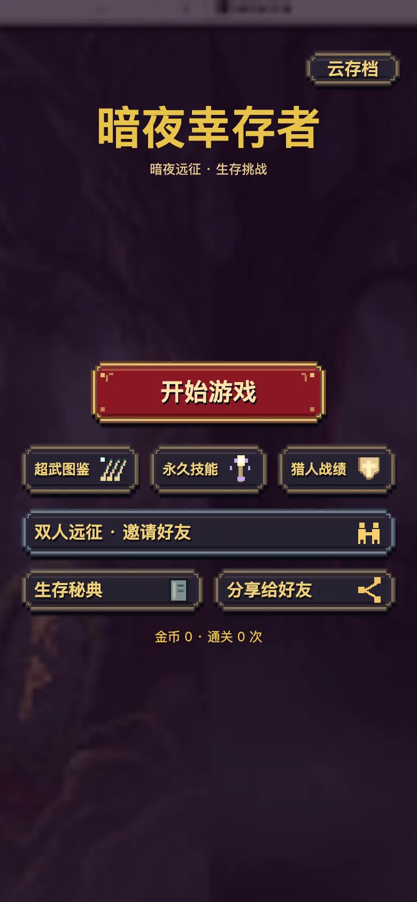
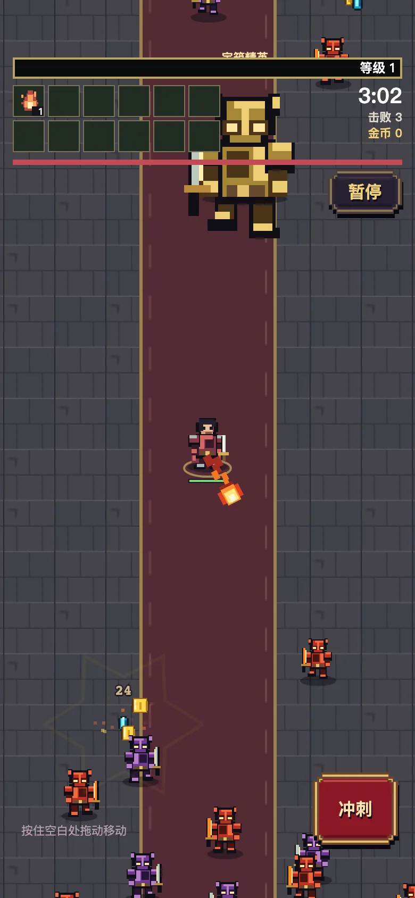
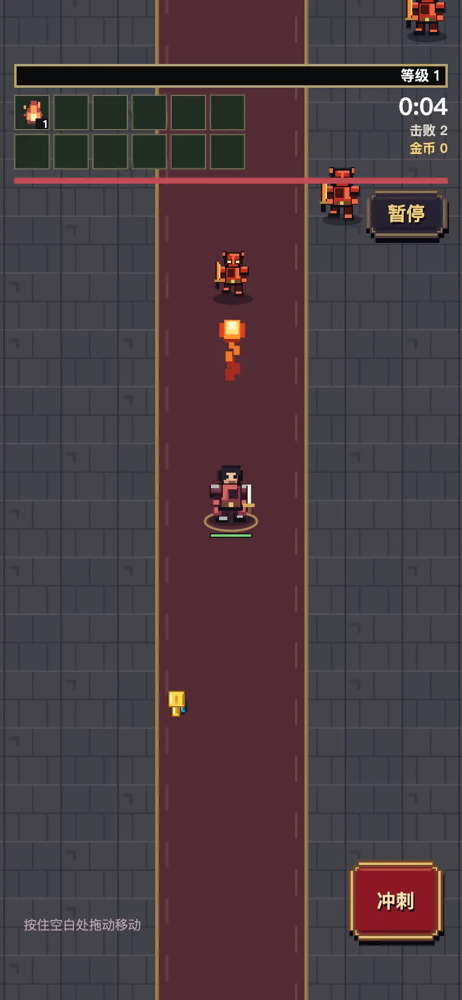
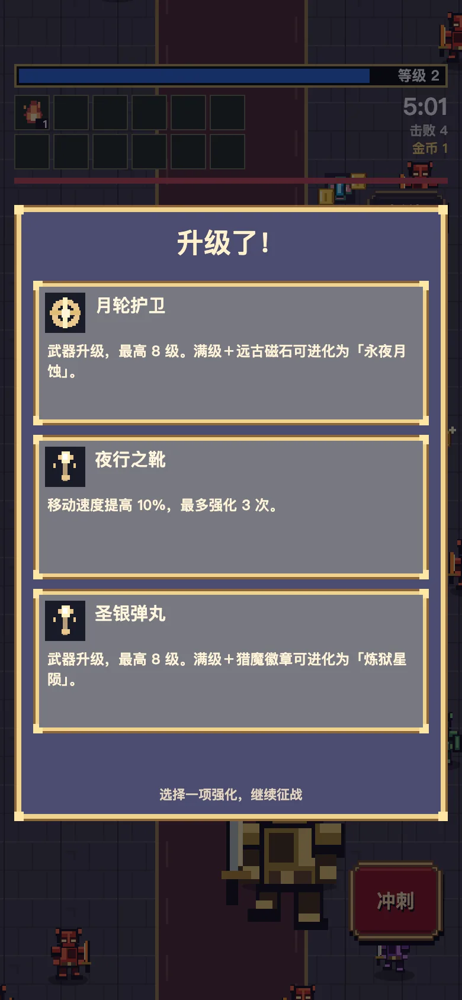
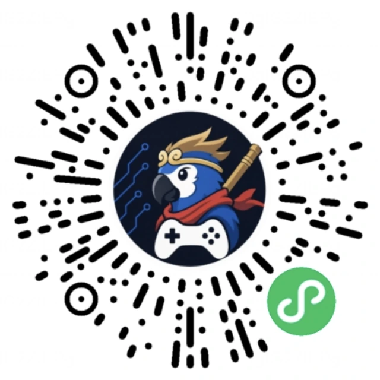

白昼生存
离线可玩，随时开局
宝箱怪
5 场
宝箱怪固定在 02:00 / 03:00 / 05:00 / 07:00 / 10:00 出现，最后一只即领主。
- 8 位英雄，通关逐个解锁
- 4 种局内饰品掉落，每种最高 3 级
- 10 项永久技能，对所有角色生效
- 本地云存档，可上传 / 恢复
微信小游戏 · v0.10.0 · 原生 Canvas
血月领主在 11:30 降临。
你不需要战胜整片黑夜——只需要活到第一缕晨光。

核心循环 / CORE LOOP
移动与一个主动技能。所有深度留给角色、升级和搭配选择——把发现留给玩家。
按住空白处拖动移动，武器自动索敌。双指可同时冲刺，冷却 3 秒。
拾取经验宝石，升级三选一。每次选择都改变弹体数量、范围与特效。
主武器最高 8 级，叠加专属饰品。满级才会解锁超武进化路线。
5 分钟后宝箱 80% 概率进化，10 分钟后必定进化。配方决定最终形态。
10:00 停止刷怪，击败最终宝箱怪、领奖后结算胜利，金币进入永久钱包。




离线可玩，随时开局
宝箱怪固定在 02:00 / 03:00 / 05:00 / 07:00 / 10:00 出现，最后一只即领主。
组队 2 人 · 联机服务器
每道防线两座防御塔。破门后存活队友恢复 35 生命，全队获得 25 经验；只有核心门破才发放永久奖励。
英雄阵容 / HEROES
每位英雄拥有独立主副武器、主动技能、专属饰品与两条超武路线。通关逐位解锁，单人与双人进度各自独立。
肉盾「铁壁·洛恩」与医疗「晨曦·艾琳」仅在双人攻城模式可用。
局外成长 / META PROGRESSION
结算金币购买永久技能，作用于所有角色。购买先写存档再扣款，存储失败自动回滚，重复结算不重复入账。价格为 ceil(基础价 × 100 × 1.5当前等级)。
技术实现 / ENGINEERING
原生微信 Canvas 实现，不使用 WebView、DOM、外部 CDN 或浏览器适配器。客户端无需构建，源码即产物。
94% 更小
新协议只同步视口附近 220 像素内的动态对象，防御建筑仍全量发送。2000 敌人场景下快照从 112 KB 降到 6.9 KB。
20Hz 模拟
伤害、碰撞、经验与奖励全部由服务器判定。客户端只发送操作，永不提交伤害或金币。
1.9ms
预缩放、预翻转、受击着色统一缓存，命中缓存后每只精灵只需一次 drawImage。2000 次绘制的单次中位耗时从 3.4 ms 降到 1.9 ms。
0依赖
不需要 npm install、不需要构建步骤。微信开发者工具直接编译源码，服务端复用既有 Node v20，不全局安装依赖。
诚实说明：以上数据来自本地自动化测试与服务器只读巡检，不代表真机帧率。iOS / Android 真机帧率、长时间发热与真实折叠设备表现仍待验证。
迭代历程 / CHANGELOG
v0.4.3 网页原型 → v0.10.0 原生微信小游戏。每次发布同步更新引擎版本、工程描述与版本测试。
三位英雄、15 分钟生存、网页 localStorage 战绩。三职业与超武进化体系在此定型。
接入独立联机服务器，20Hz 模拟 / 10Hz 广播。无微信登录、排行榜、广告或支付依赖。
城门集结大厅组队，攻破城门发放永久奖励。新增肉盾与医疗，职业分工成型。
外城 / 内城 / 核心逐层推进。新客户端协商 protocol 2，视野裁剪把快照压缩 94%。
重斧战士、精灵游侠、双刀剑士、驭鞭舞者、矮人锤卫。单人 8 位、联机 10 位。
上传 / 恢复 / 恢复码找回。服务端带 revision 乐观锁，冲突停止覆盖而非累加金币。
开始游戏 / GET STARTED
用微信扫描小程序码即可进入游戏，无需下载、无需注册。
双人远征需要两名玩家同时在线，通过六位房间号加入。
双人远征需要两名玩家同时在线，通过六位房间号加入。

微信扫码进入小游戏